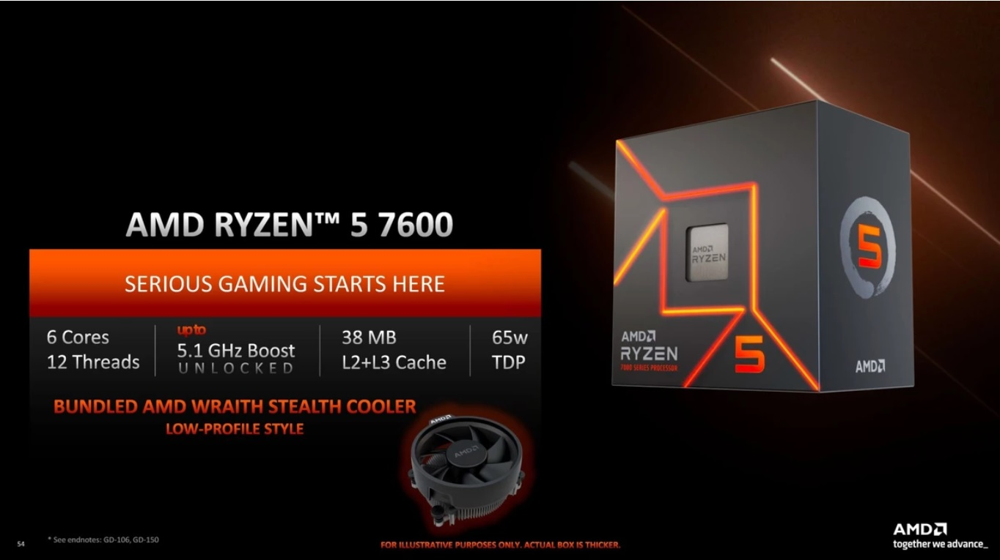

Info
Blog
Home
Jogos
Celulares
Informática
Entretenimento

Especificações do AMD Ryzen 5 7600
Marca: AMD
Modelo: 100-100001015BOX
Soquete: AM5
Núcleos: 6
Threads: 12
Frequência base: 3.8 GHz
Frequência Max Turbo: 5,1 GHz
Cache L2: 6MB
Cache L3: 32MB
Solução térmica: AMD Wraith Stealth
Suporte de SO: Edição Windows 11 - 64-Bit
Edição Windows 10 - 64-Bit
RHEL x86 64-Bit
Ubuntu x86 64-Bit
O suporte ao sistema operacional (SO) poderá variar de acordo com o fabricante.
Tecnologia de processador para núcleos de CPU: TSMC 5nm FinFET
Memória: Velocidade máxima:
2x1R: DDR5-5200
2x2R: DDR5-5200
4x1R: DDR5-3600
4x2R: DDR5-3600
Recursos gráficos: Modelo gráfico: Gráficos AMD Radeon™
Nº de núcleos de GPU: 2
Frequência gráfica: 2200 MHz
Base da GPU: 400 MHz
Tecnologias compatíveis: Tecnologia AMD EXPO™
Tecnologias AMD Ryzen™
TDP / TDP Padrão: 65W
Todos os direitos reservados!